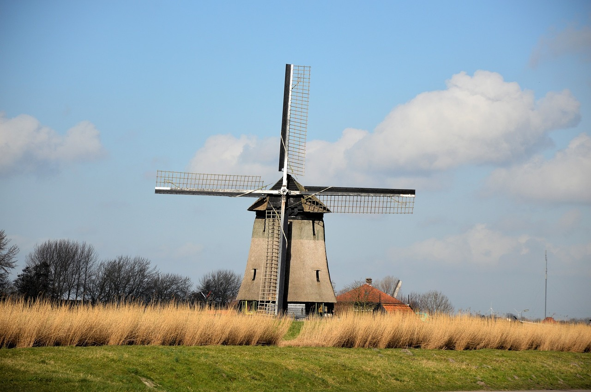

Clean energy practices!
Clean energy practices are vital for combating climate change and reducing our reliance on finite fossil fuels. By transitioning to renewable sources like solar, wind, hydro, and geothermal power, we can significantly decrease greenhouse gas emissions and minimize environmental degradation. Embracing clean energy not only benefits the planet but also promotes energy independence, stimulates economic growth, and ensures a sustainable future for generations to come.
Tips for reducing energy use at home:
- Upgrade to energy-efficient appliances: Replace old appliances with ENERGY STAR certified models, which use less energy and can significantly reduce electricity consumption.
- Improve insulation and seal drafts: Properly insulate your home and seal any gaps or leaks in windows, doors, and walls to prevent heat loss in the winter and keep cool air in during the summer
- Use programmable thermostats: Set your thermostat to automatically adjust the temperature based on your schedule, reducing heating and cooling when you're not at home or sleeping.
- Switch to LED lighting: Replace incandescent bulbs with energy-efficient LED or CFL lights, which use less electricity and last longer, reducing the frequency of bulb replacements.
- Unplug electronics when not in use: Many devices consume energy even when turned off or in standby mode. Unplug chargers, electronics, and appliances when they're not in use to eliminate "phantom" energy usage.
Some quick electronic changes you can make:
- Smart thermostats: Install a smart thermostat that learns your habits and adjusts heating and cooling accordingly, optimizing energy usage and saving you money.
- Smart lighting: Use smart bulbs or switches that can be controlled remotely via smartphone or programmed to turn on and off automatically, reducing unnecessary energy usage.
- Smart power strips: Invest in smart power strips that can detect when devices are in standby mode and cut off power to prevent energy waste.
- Home energy monitoring systems: Install a home energy monitoring system that tracks your energy usage in real-time, helping you identify areas where you can reduce consumption and save money.